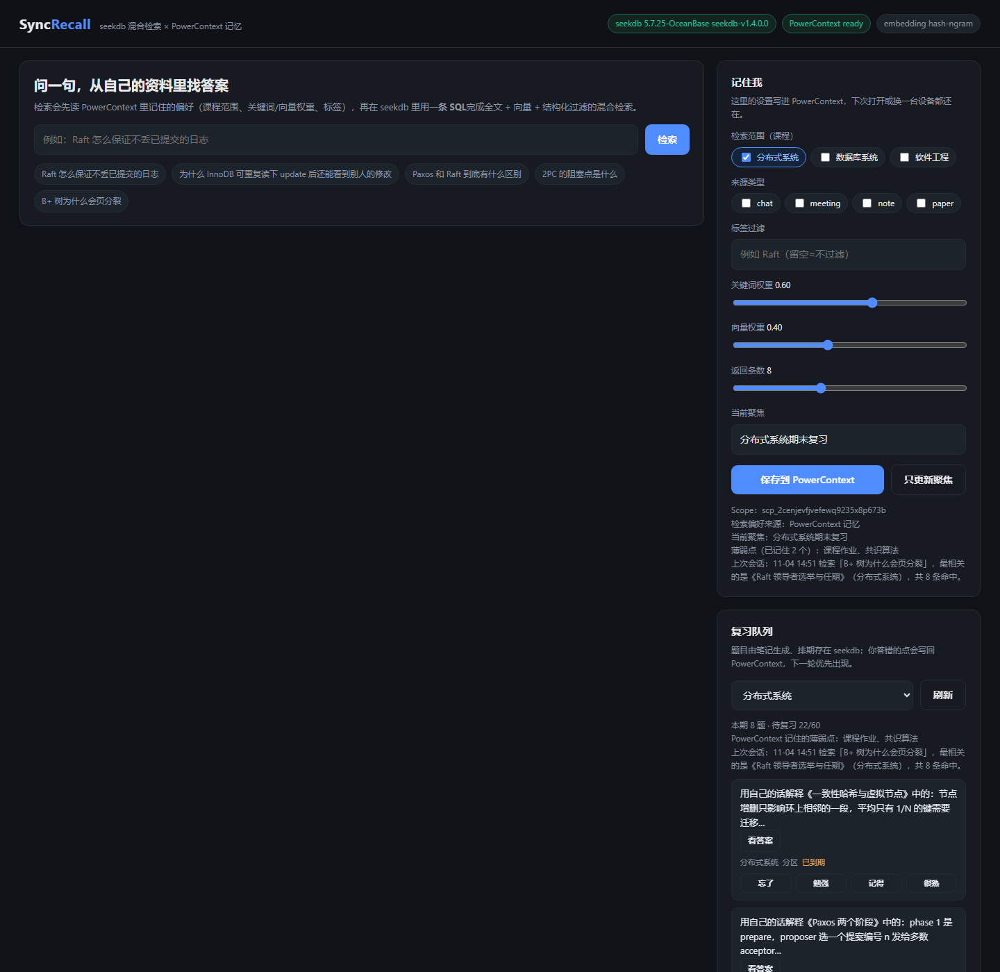
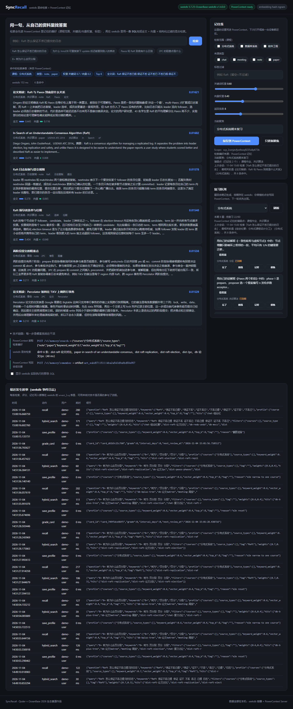

期末复习时最费时间的不是「学」，而是「找回上次学到哪、哪一段讲了这个」。
课件笔记在文档里、论文在 PDF 里、答疑在群里、分工在会议纪要里。关键词只对得上一半，换个说法就搜不到。
「只在分布式系统里找」「多看论文少看聊天记录」——这些偏好每次检索都要手工设置，下次打开又忘了。
这次没搞懂的 Paxos 阶段，下次复习照旧从头开始，薄弱点从来不参与排期。

关键词分支走 ik 分词的全文索引，语义分支走 HNSW 向量索引，
课程 / 来源类型 / 标签这些结构化条件作为过滤一起下推到数据库，最后在库内用加权 RRF 融合。
应用层只发一条语句、只收一份排序结果。
「只看分布式系统」「关键词权重 0.7」「最近在看 Raft」这些都是记忆，写进 PowerContext 的 Scope。 下一次检索先读记忆，再决定过滤条件和融合权重。
每条笔记切出 2–3 个回忆题，排期用 SM-2 存在 seekdb。到期和薄弱点优先， 答错的主题写回 PowerContext，下一轮自动往前排。
界面里可以直接展开「seekdb 实际执行的 SQL」和「PowerContext 读了什么、写了什么」；
所有检索、评分、记忆写入都落进 seekdb 的 event_log 表。
同一个问题「Raft 怎么保证不丢已提交的日志」，在 PowerContext 记住新偏好之前与之后。

两套系统的职责界限清楚：一个负责「找到」，一个负责「记得」。
| 组件 | 做什么 | 具体落点 |
|---|---|---|
| seekdb | 资料检索 + 复习排期 + 审计日志 | note（FULLTEXT ... WITH PARSER ik + VECTOR INDEX ... HNSW）、
review_card（SM-2 的 next_review_at）、event_log |
| PowerContext | 跨会话记忆：检索偏好、当前聚焦、薄弱/掌握、会话交接 | 每用户一个 Scope；kind 取 profile / focus / learning / session；
每次检索前后各一次读写（memory/search、memory/remember） |
| 本地嵌入 | 把问题和资料变成向量，不出本机 | 默认 paraphrase-multilingual-MiniLM-L12-v2（384 维）；没装依赖时退化为确定性 n-gram 哈希嵌入 |
MATCH ... AGAINST 全文分支与
ORDER BY cosine_distance(...) APPROXIMATE 向量分支 → 加权 RRF 融合 → Top-N。event_log 记下这次检索的 SQL 参数、权重、命中列表和耗时。|7 |└─VECTOR INDEX ADAPTIVE SCAN (PRE-FILTER)|note|21|
+ MATCH(note.title, note.body) AGAINST('Raft 不丢已提交 ...' IN NATURAL LANGUAGE MODE)
+ cosine_distance(note.embedding, '[...]') ORDER BY ... APPROXIMATE
docker run -d --name seekdb-kb -p 2881:2881 -e MODE=mini \ oceanbase/seekdb:1.4.0-100000172026082615
pip install "powercontext[cli,server]==1.5.0" powercontext config init --language zh --output powercontext.env # 存储选 seekdb powercontext server run --env-file powercontext.env # 默认 127.0.0.1:18080
cd qoder pip install -r requirements.txt python -m syncrecall seed # 建表 + 导入 21 条示例资料 + 60 道复习题 python -m uvicorn serve:app --host 127.0.0.1 --port 8788
http://127.0.0.1:8788/：输入「Raft 怎么保证不丢已提交的日志」→ 看到命中与 SQL；
在右侧「记住我」改成只看分布式系统并保存 → 再问一次，结果范围随之收窄。
完整步骤、环境变量、验证样例见仓库里的 qoder/README.md 与 qoder/docs/验证样例.md。
运行说明、验证样例、技术使用记录、Qoder 开发记录都在仓库 qoder/docs/ 下。